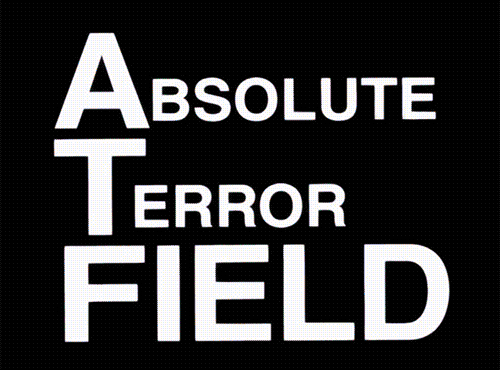
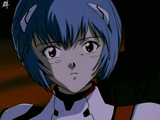
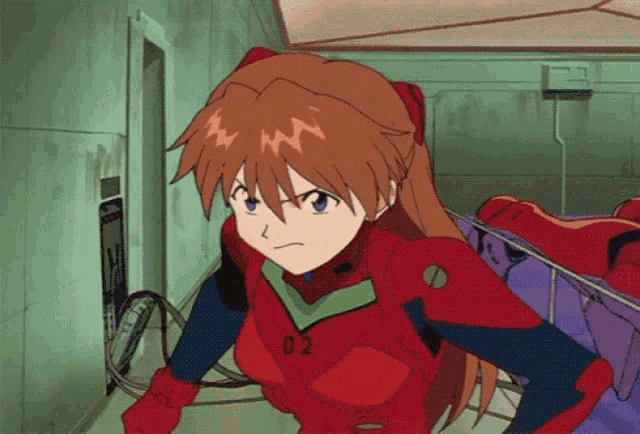

The End of Evangelion é a conclusão cinematográfica da série original, servindo como uma alternativa para os episódios finais. Ao invés de oferecer respostas simples, o filme mergulha ainda mais fundo nas angústias existenciais dos personagens, principalmente Shinji Ikari.
Shinji representa a apatia e a desesperança da juventude moderna. Ele sente-se inútil, abandonado, sem rumo e com medo de se conectar com os outros. Sua melancolia é um espelho da depressão de Hideaki Anno, criador da série, e sua jornada reflete questionamentos profundos sobre identidade, liberdade, solidão e a natureza do "eu".
O anime e o filme exploram temas da psicologia junguiana, o conceito do "horror do vazio existencial" e usam o Human Instrumentality Project como uma metáfora para a luta entre individualidade e união. A pergunta central é: é melhor viver isolado com dor, ou fundido ao todo sem sofrimento?

Impacto Cultural
Evangelion revolucionou o anime. Introduziu temas psicológicos, filosóficos e religiosos de forma intensa e inédita. Sua estética crua, suas pausas desconfortáveis, o uso do silêncio e a desconstrução do herói influenciaram profundamente obras posteriores como Madoka Magica, Steins;Gate, Attack on Titan e muitos outros.
Ao invés de escapismo, Evangelion oferece introspecção. Ao invés de ação glorificada, mostra a consequência emocional da guerra e da responsabilidade. Seu impacto continua reverberando quase 30 anos depois.
Personagens e suas Fragilidades
Shinji Ikari - 碇 シンジ
Shinji é a personificação da insegurança e da depressão. Ele quer ser aceito, mas teme ser machucado. Sua relutância em pilotar o EVA simboliza a rejeição da dor, mas também a negação de seu papel no mundo. Ele é frágil, passivo, mas profundamente humano. A frase "não devo fugir" ecoa como um mantra contra sua própria apatia.
Rei Ayanami - 綾波 レイ

Rei é o vazio feito carne. Um clone obediente, com dificuldades de compreender sentimentos. Sua jornada é a do nascimento de uma identidade. Em The End of Evangelion, ela toma a decisão de trair Gendo e se unir a Lilith, buscando um novo destino para a humanidade.
Asuka Langley Soryu - 惣流・アスカ・ラングレー

Asuka esconde sua dor com arrogância. Sua confiança extrema é uma fachada para o medo de não ser amada. Sua queda emocional culmina em um colapso mental profundo, refletindo seu desejo desesperado por validação. Em seu retorno no filme, ela encontra força em si mesma, lutando ferozmente contra os Mass Production EVAs.
Misato Katsuragi - 葛城 ミサト
Misato é um paradoxo: responsável e desleixada, forte e quebrada. Ela busca consolo no álcool e em relacionamentos fugazes. Sua relação com Shinji é quase maternal, mas conflituosa. Ela acredita no garoto até o fim, mesmo quando ele perde as forças.
Kaworu Nagisa - 渚 カヲル
Kaworu é empatia pura. Um ser angelical que escolhe morrer para dar a Shinji a chance de escolher o futuro. Sua breve aparição deixa uma marca profunda na psique do protagonista. Kaworu representa o amor incondicional e a escolha de sacrifício pelo outro.
Trilha Sonora
A trilha de Evangelion, composta por Shiro Sagisu, é uma mistura de música clássica, experimental e emocional. Peças como "Komm, süsser Tod" e "Thanatos" são essenciais para a ambientação sombria e introspectiva. "Fly Me to the Moon" aparece em diversas versões como encerramento, simbolizando um desejo de fuga ou consolo.
A música é uma personagem invisível que traduz aquilo que os protagonistas não conseguem dizer em palavras.